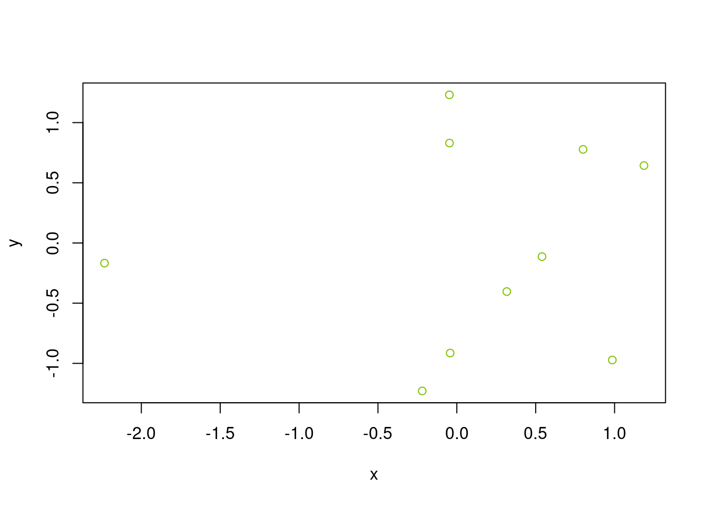
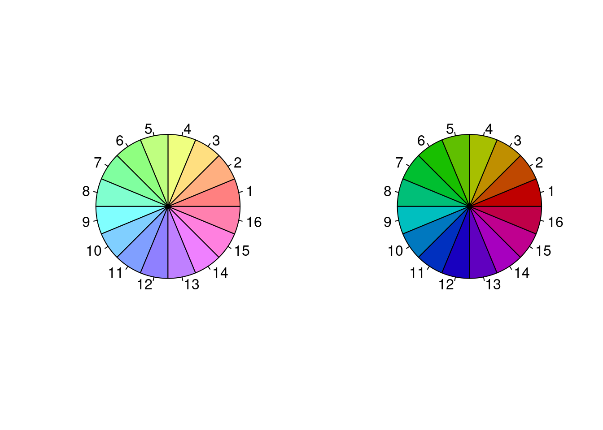
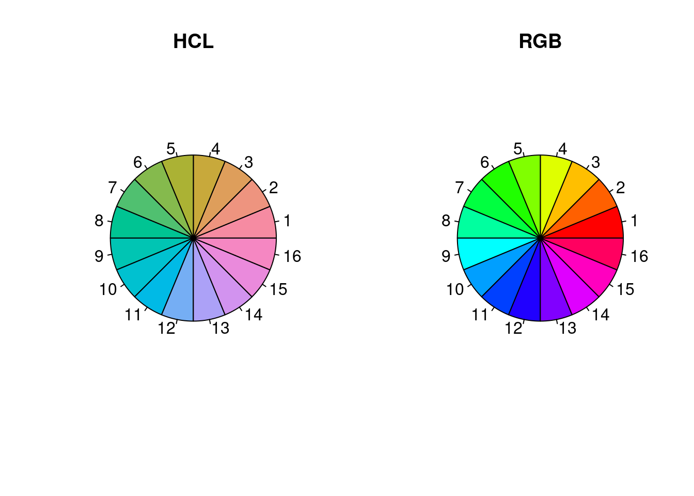
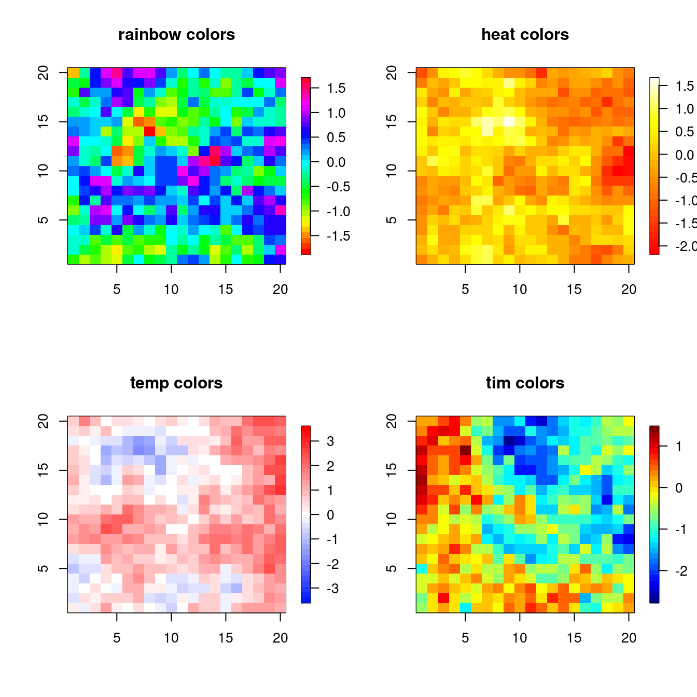
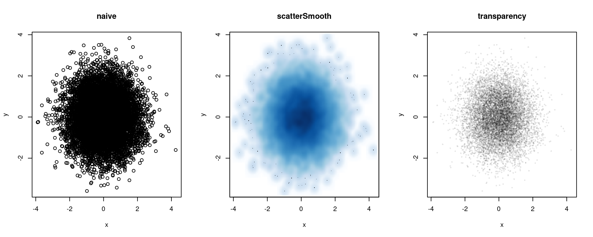
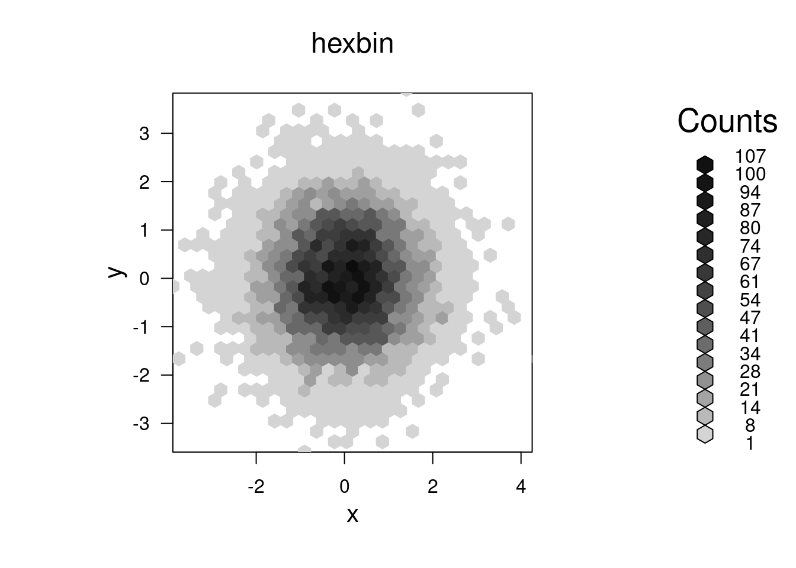
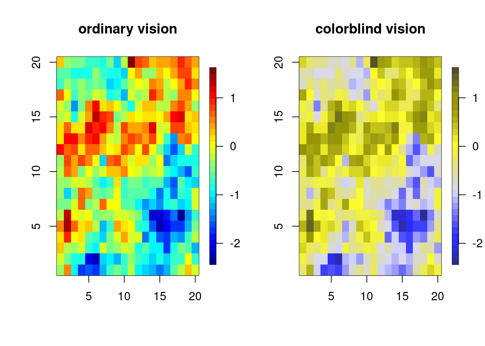

{kind=link}
{kind=link}
{kind=link}
# convert from pdf to jpeg
gs -dNOPAUSE -r[xres]x[yres] -sDEVICE=jpeg -sOutputFile=file.jpg file.pdf
# extract pages from a pdf
gs -sDEVICE=pdfwrite -dNOPAUSE -dQUIET -dBATCH -dFirstPage=m \
-dLastPage=n -sOutputFile=out.pdf in.pdf
# merge pdf files into one pdf
gs -dNOPAUSE -sDEVICE=pdfwrite -sOUTPUTFILE=out.pdf \
-dBATCH in1.pdf in2.pdf in3.pdf Graphics
This unit discusses some general concepts and principles of graphics, illustrated in some cases with R code.
References:
- Adler
- Chambers
- Venables and Ripley, Modern Applied Statistics with S
- Murrell, R Graphics
- R intro manual (R-intro) on CRAN
- Hadley Wickham, ggplot2: Elegant Graphics for Data Analysis
1. Good practices for graphics
There are a number of principles that can be used in developing and critiquing graphics. Let’s skim over the principles and then think about them in the context of some examples, some of which show those principles being violated.
Best practices
Here’s a list of some guidelines to consider in creating graphics.
Have a high density of information to space
Show the data clearly: are the relationships and patterns that are clearly seen in the graph the ones you want to represent?
Can you reorder groups or variables to better illustrate the key points?
Strategies for going beyond two dimensions
Use color, but avoid excessive use of color that is not informative.
Use varying symbol or line types
Use multiple panel plots
Avoid 3-d graphics unless they truly add information
Multi-panel (trellis) plots (called “small multiples” when using the same scale/axes) is a key strategy
Think carefully about your baseline (e.g., the lowest level on the y-axis)
Zero is often a good baseline
Avoid stacked barplots (see demo code) and other plots with shifting baselines, as it’s hard to assess anything except the total and the baseline category.
Studies indicate that humans have a hard time comparing areas, volumes, or angles, so try to avoid plots that represent data using any of these, including pie charts. Instead use position or length (horizontal is better than vertical) to display data values
Label axes and include units
Keep the ranges of axes (and other features) the same for multiple panels, when possible
Use a legend where appropriate
Jitter values if needed so that all the data points can be seen, but if you have too many points to avoid a lot of overplotting, use strategies discussed below.
Use vector graphics formats such as PDF or Postscript/EPS as these scale without pixelation when resized. Raster formats such as JPEG, PNG, and TIFF don’t rescale well and when they have high resolution also have large file sizes. See Section 3 for more details.
Rob Hyndman has a list of 20 rules for good graphics, including some of the ones above. There is also a list of guidelines in this article.
Some example graphics
This pie chart circulating online is intended to raise awareness of human trafficking. What do you like or not like about the graphical presentation?
Here are various plots showing time series of categorical data. What do you like or not like about the graphical approaches shown?
- This NY Times article shows deaths from drug overdoses over time.
- This graphic from the FlowingData website shows causes of mortality by age and sex in the United States.
- This NY Times article shows the sources of electricity for the US and specific states.
- This NY Times article presents time-series graphics about how many Olympic medals have been won by different countries.
Consider this scatterplot of life expectancy statistics from this article on variation in lifespan in European countries in the International Journal of Epidemiology. What are you able to learn from this presentation of the data. What other ways could you plot the data to better illustrate patterns in the data? The data are in this CSV with some initial exploration of plotting approaches using
ggplotin R.Here’s another online graphic. What aspects of the graph could be improved? What aspects do you like?
This file in the repository has an example of a crazy pie chart from an advertisement in the NY Times from December 2014.
This article in the repository is rather old but the ideas are still relevant and while the example figures are dated in terms of appearance, the same issues arise with more modern-looking graphics.
This article in the repository presents a modern-day reinterpretation of a famous graphic from Florence Nightingale regarding causes of death in the British Army during the Crimean War in the 1850s.
This somewhat recent blog post nicely discusses the process of improving a visualization regarding streaming services market share in 2020 vs. 2021.
2. Graphics devices
Graphics are plotted on a device. In the old days when computer monitors were not high resolution or in color, this referred to a physical device, but nowadays this is a general term that denotes the context in which the plot is being made: typically on screen or as a file in a particular file format. The standard device in a UNIX environment is X11, basically a graphics window set up in the X11 windowing system. On-screen plotting is generally done with the software you are using (e.g., Python or R) interacting with a window manager for the operating system.
Often one needs to iterate to get a plot to look good when printed to a file; in particular the aspect (width to height ratio), the margin sizes relative to the size of the core plot, and size of plotting symbols and text relative to the size of the plot. In other words, the relative sizes when seen in a graphics window on the screen may be very different when printed to a file.
3. Graphics file formats
Vectorized vs. rasterized file formats
pdf images are vectorized. What that means is that in general elements of the image are symbolic objects (such as points, text, symbols, line segments, etc.) and when an image is resized, the items rescale appropriately for the new size without losing resolution. In contrast, with a rasterized format such as jpeg or png or tiff, individual pixels are plotted, and when an image is rescaled, in particular enlarged, one is stuck with the resolution that one used in plotting the figure (i.e., one has the original pixels but if you zoom, you only show some of them, losing resolution).
I strongly recommend using vectorized images in most situations. That said, one downside to vectorized images is that with a lot of points or line segments, they can be very large. And for 2-d images, rasterized formats do make some sense inherently, though the other features in the file (such as any text) is also rasterized.
Conversion utilities
UNIX has a lot of utilities for converting between image formats. Windows and Mac also have GUI-style programs for doing this.
In UNIX, pdftops will convert pdf to postscript and with the optional argument -eps to encapsulated postscript, while ps2epsi will create encapsulated postscript. gs (Ghostscript) will do a lot of different manipulations of ps and pdf files, including converting to jpeg and other formats and merging and splitting pages of pdf files. Here are some examples of command-line calls from within a UNIX shell:
4. Colors
I haven’t converted this section to use Python, but the concepts are still relevant in Python or other languages.
Colors in R
The default colors can be seen with palette(). Using col=i in a plot uses the ith element of the output of palette(). You can change the palette:
palette(c(“black”, “yellowgreen”, “purple”)`See colors() for the colors available by name. You can also use RGB levels, discussed next.
Colorspaces
Colors live in a 3-dimensional space that can be parameterized in several ways. One standard parameterization is RGB, which is a set of three numbers indicating the intensity of red, green and blue. We can use RGB levels to specify colors in R.
x <- rnorm(10); y <- rnorm(10)
rgb(0.5, 0.75, 0) # each number is specified on scale of [0, 1][1] "#80BF00"plot(x, y, col = rgb(0.5, 0.75, 0))
col2rgb("yellowgreen") # on scale of {0,...,255} [,1]
red 154
green 205
blue 50Notice rgb() gives us back the color as a hexadecimal number (#RRGGBB), where each of RR, GG, and BB is 2-digit hexadecimal number (base 16) in the range 0 (00) to 255 (FF), so red is #FF0000 (all red, no green, no blue). A string in this format can be used to specify colors and you’ll run across this in R if you work with colors.
Another parameterization is HSV: hue, saturation (colorfulness metric), and value (brightness). Let’s see the demo code to see how colors vary as we change HSV values using rainbow().
n <- 16
par(mfrow = c(1,2))
## rainbow varies hue while keeping s and v constant
pie(rep(1, n), col = rainbow(n, s = .5)) # reduce saturation
pie(rep(1, n), col = rainbow(n, v = .75)) # reduce brightness
A parameterization that uses a more absolute measure of colorfulness than saturation is HCL (hue, chroma, luminance). In the example code below, none of the colors stands out more than the others, unlike the RGB or HSV (see above) based rainbows.
library(colorspace)
par(mfrow = c(1,2))
pie(rep(1, n), col = rainbow_hcl(n, c = 70, l = 70), main = 'HCL')
pie(rep(1, n), col = rainbow(n), main = 'RGB')
The colorspace package provides a lot of helpful tools for manipulating colors (including for ggplot2 and shiny), including determining palettes for qualitative, sequential, and diverging values.
Color sequences
If we’re using color to illustrate a continuous range of values, we need a meaningful color sequence. To construct a continuous color set giving a sequence of colors you can use a variety of color schemes: rainbow(), heat.colors(), terrain.colors(), topo.colors(), temp.colors(), and (in the fields package), tim.colors(). (I know the Tim of tim.colors! He likes to fish.)
The main thing to avoid is a sequence in which the colors do not appear to vary smoothly or in some cases may not even appear monotonic. Let’s examine a variety of the sequences:
library(fields) # includes image.plot(), which takes image() and adds a legend; also includes tim.colorsLoading required package: spamSpam version 2.10-0 (2023-10-23) is loaded.
Type 'help( Spam)' or 'demo( spam)' for a short introduction
and overview of this package.
Help for individual functions is also obtained by adding the
suffix '.spam' to the function name, e.g. 'help( chol.spam)'.
Attaching package: 'spam'The following objects are masked from 'package:base':
backsolve, forwardsolveLoading required package: viridisLite
Try help(fields) to get started.n <- 20; xs <- ys <- 1:n
gr <- expand.grid(xs, ys)
U <- chol(exp(-rdist(gr)/6))
par(mfrow = c(2, 2))
## rainbow color sequence
image.plot(1:n, 1:n, matrix(crossprod(U, rnorm(n^2)), n, n),
col = rainbow(32),
xlab = '', ylab = '', main = 'rainbow colors')
## heat.colors
image.plot(1:n, 1:n, matrix(crossprod(U, rnorm(n^2)), n, n),
col = heat.colors(32),
xlab = '', ylab = '', main = 'heat colors')
## temp.colors
temp.colors <- function(n=25){
m <- floor(n/2)
blues <- hsv(h=.65, s=seq(1,0,length=m+1)[1:m])
reds <- hsv(h=0, s=seq(1,0,length=m+1)[1:m])
c(blues,if(n%%2!=0) "#FFFFFF", reds[m:1])
}
image.plot(1:n, 1:n, matrix(crossprod(U, rnorm(n^2)), n, n),
col = temp.colors(33), zlim = c(-3.5, 3.5),
xlab = '', ylab = '', main = 'temp colors')
## here I force zlim to be symmetric about zero and use an odd number (33) of levels so that the midpoint is white
## tim.colors
image.plot(1:n, 1:n, matrix(crossprod(U, rnorm(n^2)), n, n),
col = tim.colors(32),
xlab = '', ylab = '', main = 'tim colors')
temp.colors() is a good blue-to-red “diverging” color scheme that emphasizes magnitudes around a central point, with two hues - one for each direction.
The RColorBrewer package is good for choosing colors for unordered levels, sequential ordering, and two-way diverging color ordering and the ColorBrewer website provides recommendations. We’ll see an example in the section on mapping.
Overplotting of points
As a sidenote, if you have a scatterplot with many points that will overplot each other (as well as creating a huge file if using a vectorized format), consider the scatterSmooth() function as well as the hexbin package. The former creates a two-d density plots with outlying individual points included, while the latter creates an empirical two-d density by binning into hexagonal areas. A third approach is to have your color be partly transparent, so that overplotting results in darker colors. Note that this may not work on all devices. We can specify transparency level as either the 4th number in rgb() on a scale of 0 (transparent) to 1 (opaque - the default), or as a fourth hexadecimal number on the scale of 00 to FF (0 to 255); e.g., #FF000080 would be half-transparent red, since 80 is one-half of FF in base 16.
library(hexbin, quietly = TRUE)
x <- rnorm(10000); y <- rnorm(10000)
par(mfrow = c(1, 3))
plot(x, y, main = 'naive')
smoothScatter(x, y, main = 'scatterSmooth')
plot(x, y, col = rgb(0, 0, 0, .1), pch = 16,
cex = .5, main = 'transparency') 
par(mfrow = c(1, 1))
bin <- hexbin(x,y)
plot(bin, main = 'hexbin') 
Colorblindness
One thing to be aware of is that 7-8% of men are color blind. As we see in the demo code, the standard result of this is to make it difficult to distinguish red and green, so one may want to avoid color schemes that have both of these in them. We can use dichromat() from the dichromat package to assess the effect of colorblindness on viewing of one’s images.
library(dichromat)
showpal <- function(colors){ # helper function to show colors
n <- length(colors)
plot(1:n, rep(1, n), col = colors, pch = 16, cex = 4)
}
dev.off() # close the graphics windows to clear out old color stuffnull device
1 par(mfrow=c(2, 1))
showpal(palette()) # show default palette colors
# here's how those look with standard colorblindness
showpal(dichromat(palette())) I like fields::tim.colors() for spatial images. How does it do in terms of color-blindness? Based on the images below, not too bad.
library(fields, quietly = TRUE)
n <- 20; xs <- ys <- 1:n
gr <- expand.grid(xs, ys);
U <- chol(exp(-rdist(gr)/6))
par(mfrow = c(1, 2))
vals <- matrix(crossprod(U, rnorm(n^2)), n, n)
## how does tim.colors fair with color-blindness?
image.plot(1:n, 1:n, vals, col = tim.colors(32),
xlab = '', ylab = '', main = 'ordinary vision')
image.plot(1:n, 1:n, vals,
col = dichromat(tim.colors(32)), # actually not too bad
xlab = '', ylab = '', main = 'colorblind vision') 